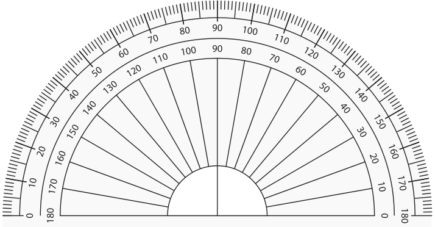
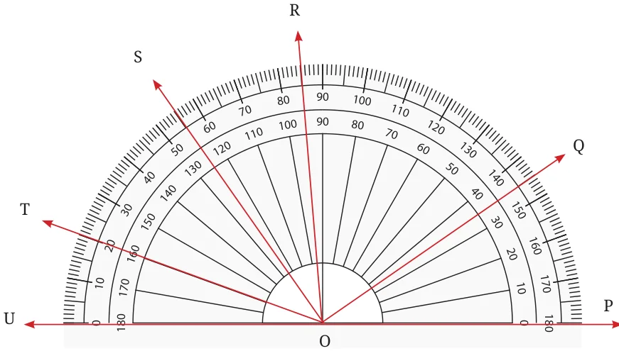
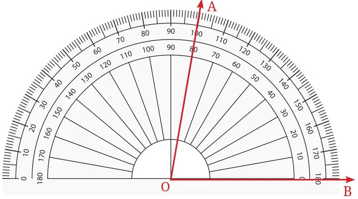
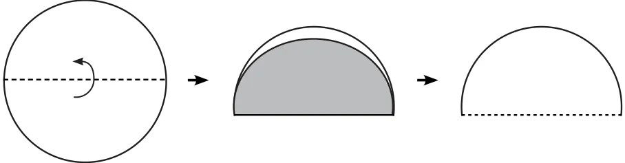
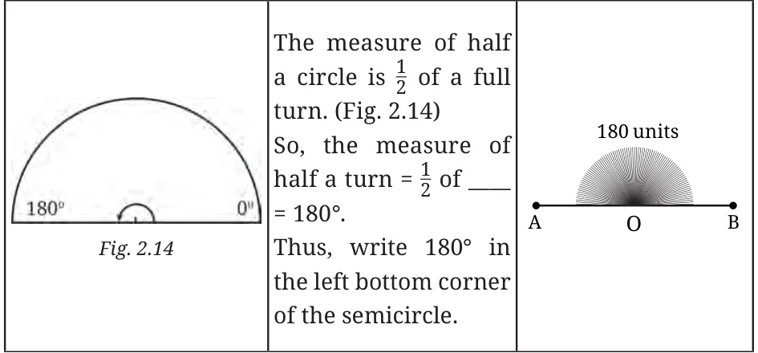
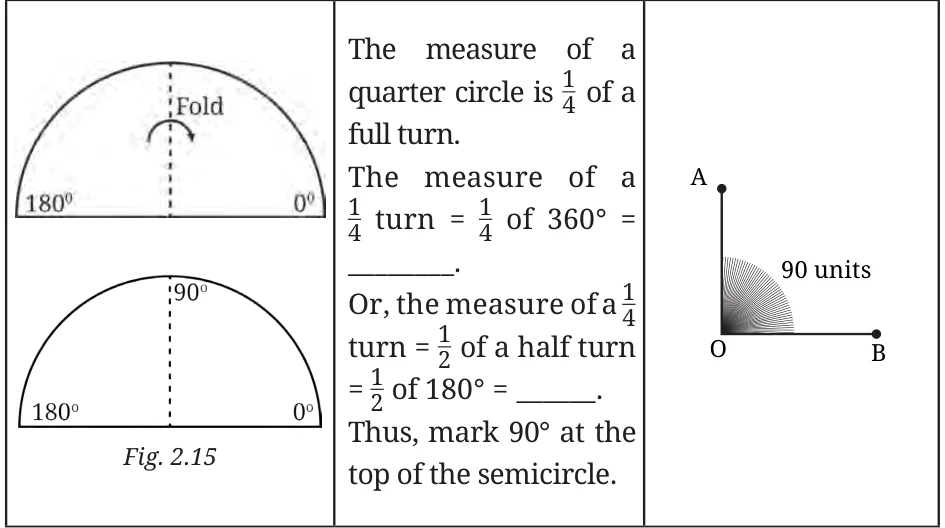
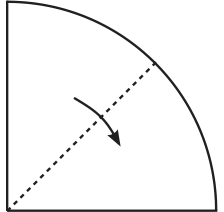
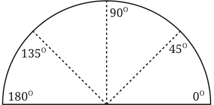
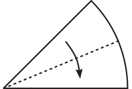
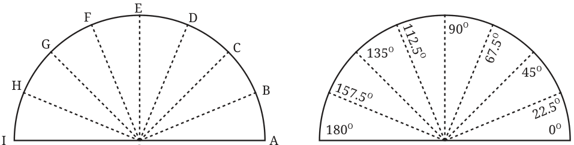

This is a protractor that you find in your geometry box. It would appear similar to the protractor above except that there are numbers written on it. Will these make it easier to read the angles?

There are two sets of numbers on the protractor: one increasing from right to left and the other increasing from left to right. Why does it include two sets of numbers? Name the different angles in the figure and write their measures.

Did you include angles such as \(\angle TOQ\)? Which set of markings did you use - inner or outer? What is the measure of \(\angle TOS\)? Can you use the numbers marked to find the angle without counting the number of markings? Here, OT and OS pass through the numbers 20 and 55 on the outer scale. How many units of 1 degree are contained between these two arms? Can subtraction be used here?
How can we measure angles directly without having to subtract?
Place the protractor so the center is on the vertex of the angle. Align the protractor so that one the arms passes through the \(0 ^{\circ}\) mark as in the picture below.

What is the degree measure of \(\angle AOB\)?
Make your own Protractor!
You may have wondered how the different equally spaced markings are made on a protractor. We will now see how we can make some of them!
- Draw a circle of a convenient radius on a sheet of paper. Cut out the circle (Fig. 2.13). A circle or one full turn is \(360 ^{\circ}\) .
- Fold the circle to get two equal halves and cut it through the crease to get a semicircle. Write ‘0 \(^{\circ}\) ’ in the bottom right corner of the semicircle.


- Fold the semi-circular sheet in half as shown in Fig. 2.15 to form a quarter circle.

- Fold the sheet again as shown in Figs. 2.16 and 2.17:


When folded, this is \(\frac{1}{8}\) of the circle, or \(\frac{1}{8}\) of a turn, or \(\frac{1}{8}\) of \(360 ^{\circ}\) ,
or \(\frac{1}{4}\) of \(180 ^{\circ}\) or \(\frac{1}{2}\) of \(90 ^{\circ} =\) ________________________.
The new creases formed give us measures of \(45 ^{\circ}\) and \(180 ^{\circ} - 45 ^{\circ} = 135 ^{\circ}\) as shown. Write \(45 ^{\circ}\) and \(135 ^{\circ}\) at the correct places on the new creases along the edge of the semicircle.
- Continuing with another half fold as shown in Fig. 2.18, we get an angle of measure ________________________.

- Unfold and mark the creases as OB, OC, ..., etc., as shown in
Fig. 2.19 and Fig. 2.20.

Think!
In Fig. 2.19, we have \(\angle AOB = \angle BOC = \angle COD = \angle DOE = \angle EOF = \angle FOG = \angle GOH = \angle HOI=\underline{\qquad}\). Why?
Angle Bisector
At each step, we folded in halves. This process of getting half of a given angle is called bisecting the angle. The line that bisects a given angle is called the angle bisector of the angle. Identify the angle bisectors in your handmade protractor. Try to make different angles using the concept of angle bisector through paper folding.